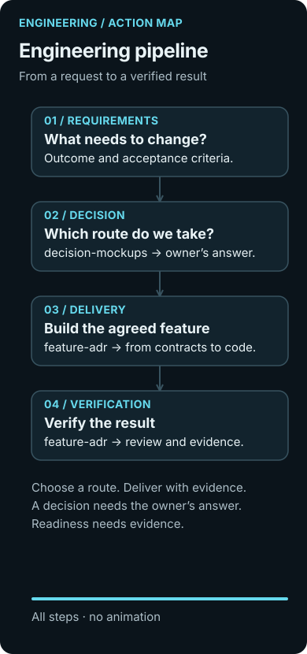
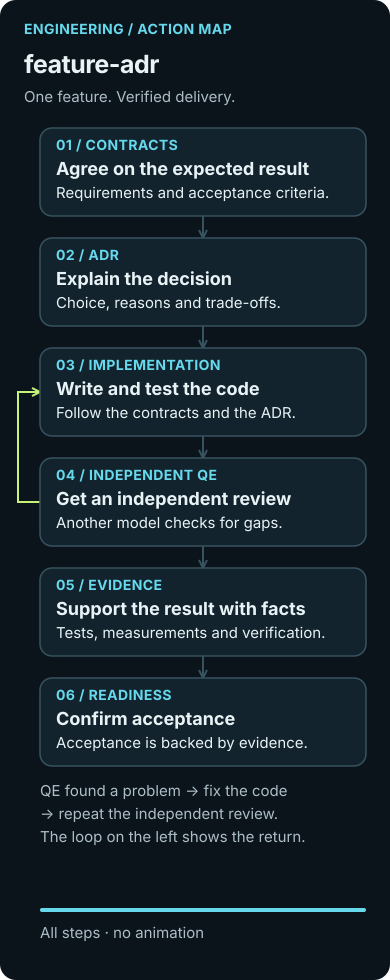
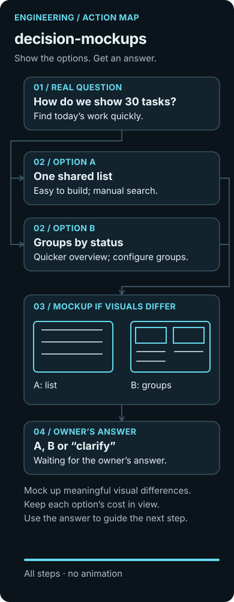
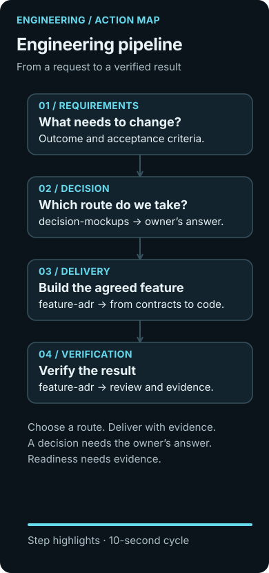
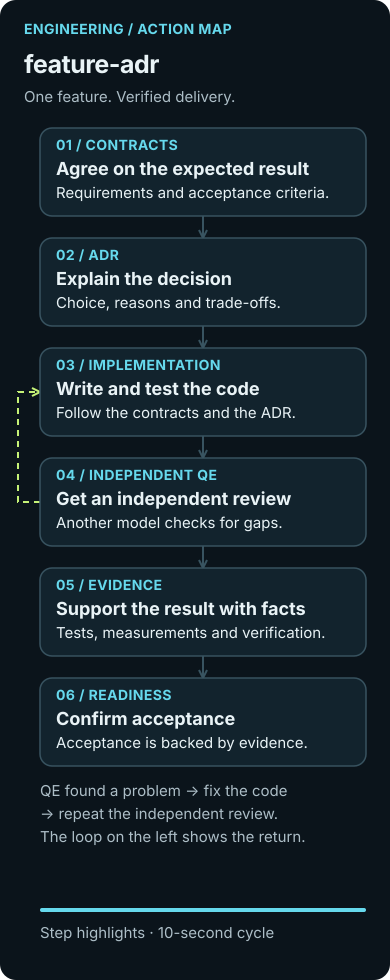
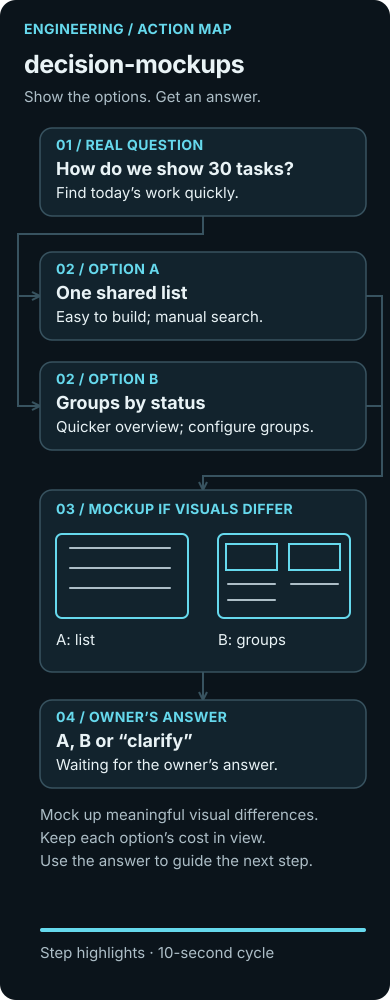

Engineering pipeline
From a question
to verified code
Three maps show when to agree on the outcome, ask the owner to choose, and verify that a feature is ready.
Previews are static. Open a section, then expand its animated diagram—or use the static view.

Engineering pipeline
A map of the family: where you need the owner’s answer and where you need a process for delivering one feature.
Explore the diagram →
feature-adr
For a feature with a clear goal: record the agreements and carry them through to verified code.
Explore the diagram →
decision-mockups
For a real fork in the road: show viable options, the cost of each, and ask for an answer.
Explore the diagram →Action map
Engineering pipeline
A map of the family: where you need the owner’s answer and where you need a process for delivering one feature.
Requirements → decision → delivery → verification. At the decision stage, decision-mockups compares options and asks the owner to choose. feature-adr connects agreed requirements and decisions to code and evidence of verification.
Open the animated diagram


Action map
feature-adr
For a feature with a clear goal: record the agreements and carry them through to verified code.
Contracts → ADR → implementation → independent QE → evidence → readiness. QE findings send the work back for a code fix and another independent review. Evidence connects the result to the acceptance criteria.
Open the animated diagram


Action map
decision-mockups
For a real fork in the road: show viable options, the cost of each, and ask for an answer.
How do we show 30 tasks? A: one shared list—easy to build, but manual search. B: groups by status—a quicker overview, but grouping rules need setup. Show a mockup if the visual differences matter. The owner chooses A or B, or asks for clarification. Until then, no option has been chosen.
Open the animated diagram
